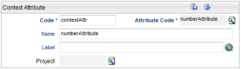

Contexts Details
When the user clicks the Add or Detail buttons from the Context search page, the Context Detail page is displayed.
 |
Adding Contexts
Click the Add button to add a new context.
| Field | Description | Rules |
|---|---|---|
| Code | This is the code used to identify this Context. This code is not restricted to alphanumeric characters, it can also contain a combination of spaces, hyphens, etc. | Mandatory, Unique |
| Status | A list of available Status for this Context (for example, Definition and Active). | Mandatory |
| Label | The visual Label used for this Context, which is used in the application user interface. This field is a translational string that supports language translations (refer to Velocity Studio's Translation Element for more details). | Mandatory |
| Description | A description of this Context. | Optional |
| Project | Each object is assigned to a Project. This defaults to the active or opened project when the Context is first created. | Mandatory |
Defining Attributes
The attributes tab allows you to define the Attribute information for the Context.
|  |
| Field | Description |
|---|---|
| Code | The Code ID for this Context Attribute. |
| Attribute Code | Search for the attribute type code that you want to associate with this Context. |
| Name | The name of the attribute for internal use when designing your catalog model. This field is not supported by language translation. This name becomes the context variable name. |
| Label | The visual Label used for this Attribute, which is used in the application user interface. |
| Project | Search for the name of the project that holds the Attribute object. |